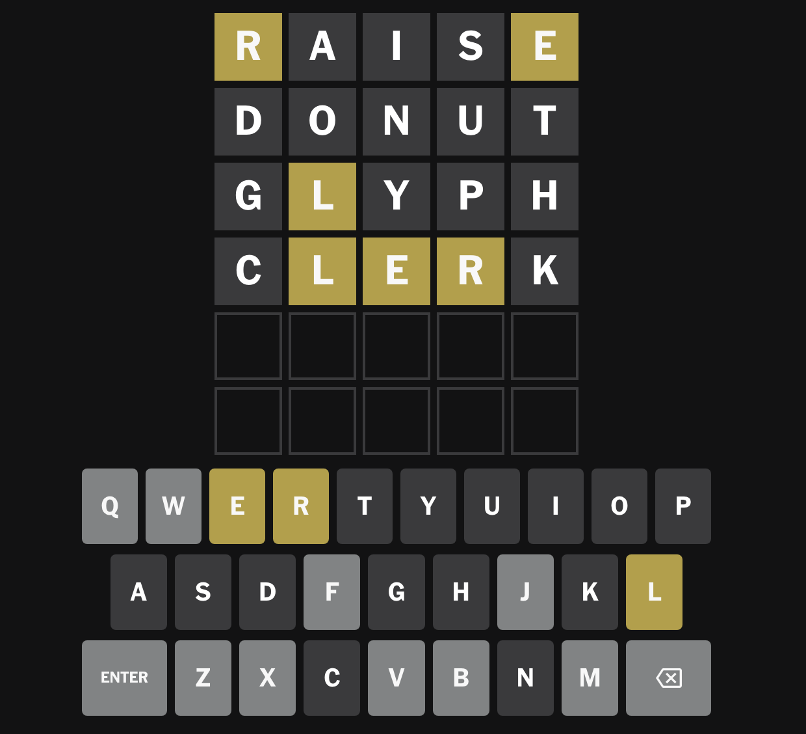
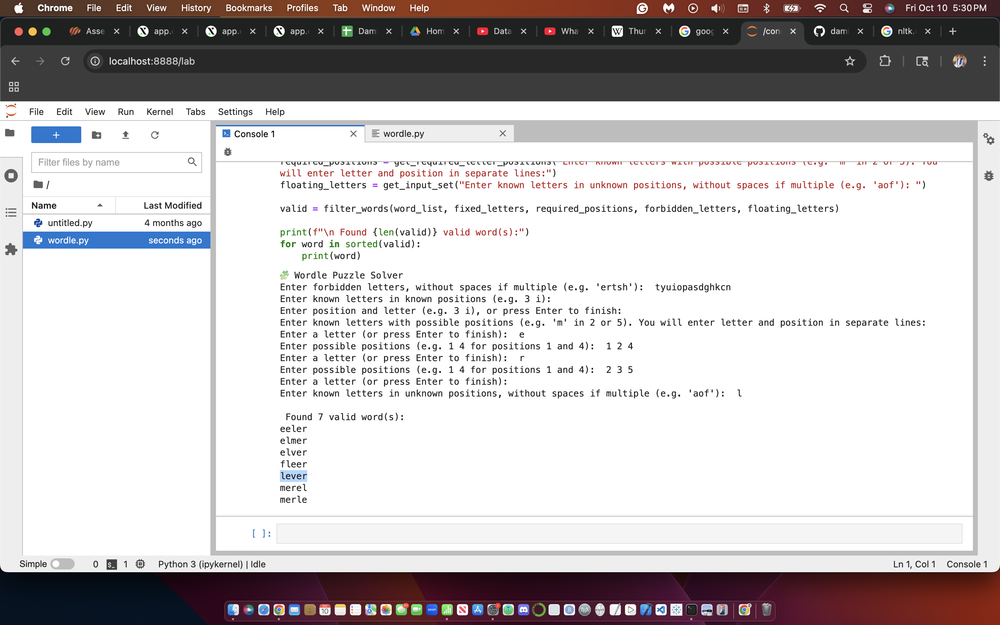

My Projects
LA Restaurant Analysis: Yelp Ratings and Health Grades
See below: interactive maps visualizing restaurants in LA county by yelp star rating

Collaborated in a 5-person team (+ project lead) to analyze Yelp rating and health inspection data for restaurants in Los Angeles and published data-driven article online to Medium.
Tools: python, pandas, matplotlib, sklearn, tableau
View our article hereWordle Solver


Fun tool used to find possible solutions to partially solved NYT Wordle puzzles. Eliminate letters, input known letters with known, potential, and unknown positions, and get a list of possible words!
Tools: python, nltk (natural language tool kit)
View GitHub repo hereRoller Coaster Classification
See below: interactive dashboard visualizing several different statistics on roller coasters in my data by track type

My attempt to use tabular data on roller coasters to build classifiers and deep learning models that could identify coasters by track type
Tools: python, pandas, numpy, matplotlib, sklearn, keras, tensorflow, tableau
View GitHub repo here